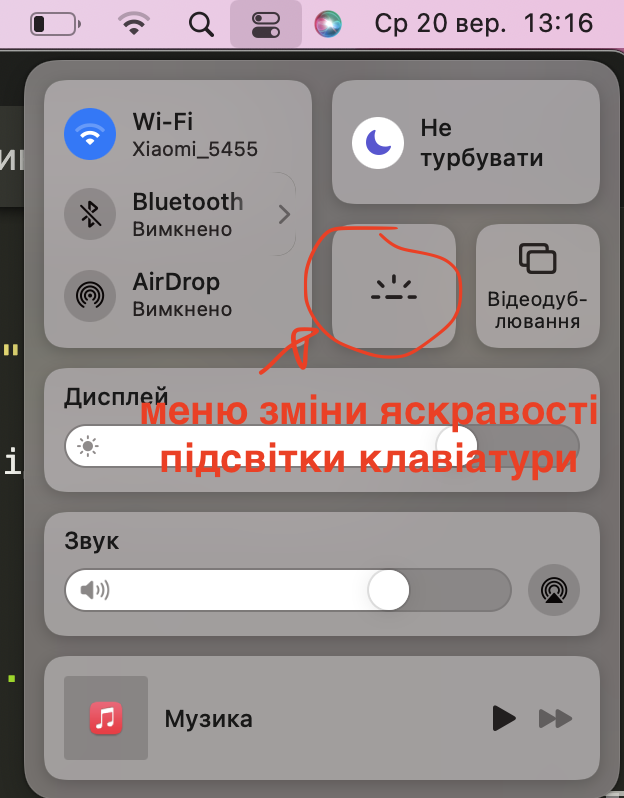

Іноді яскарава підсвітка клавіатури заважає, ви можете вимкнути або зменшити яксравість підсвітки клавіатури в спеціальному меню на макбуці.

Зверніть увагу! Підсвітка клавіатури на макбуці не працює при >денному світлі, вона вмикається тільки при недостатньому >освітленні, тому вдень меню регулювання яскравості буде >неактивним.
Як змінити яскравість підсвітки клавіатури. Ввімкнути-вимкнути підсвітку на макбуці.
Читайте про розміщення символів на клавіатурі мак та інші корисні статті в розділі: Клавіатура мак.